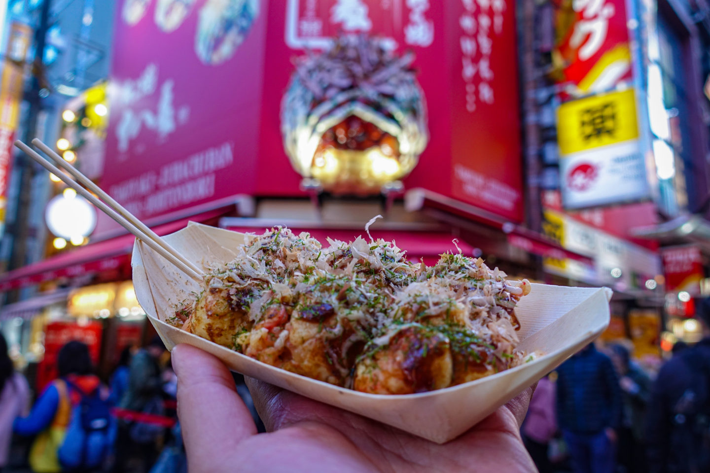
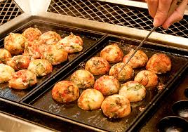
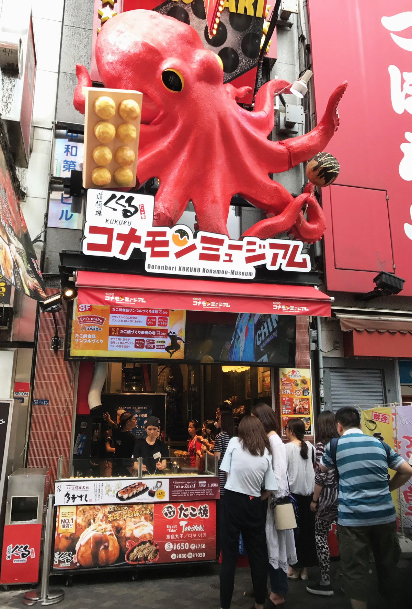

Takoyaki
  
What is Takoyaki?
Takoyaki is a savory snack ball made with batter containing a piece of octopus inside. Originating from Japan, with the name Tako meaning octopus in Japanese. Yaki meaning grilled in Japanese
In short, they are tiny hot balls of batter filled with octopus, ginger, tempura bits, and green onions. Usually top with mayo, bonito flakes, and any topping you desire
Crispy, Gooey and Delicious. Caution: VERY HOT and TASTY
Ingredients for Takoyaki
- Eggs
- Flour
- Dashi Powder
- Octopus
- Green Onions
- Red Ginger
- Tenkasu Tempura bits
- Kewpie Mayo
- Takoyaki Sauce
- Bonito Flakes
- Seaweed Flakes
- Takoyaki Pan
- Chopsticks or Skewers
How to make Takoyaki step by step
- Mix eggs, flour, and dashi powder together. Making sure batter is smooth with no chunks.Add tenkasu into batter then mix until evenly spread apart.
- Prep all the fillings. Start by cutting up the octopus into small bite size chunks.preferance of size depends on person. Cut up the green onions, grab the takoyaki pan, and a some oil bit of oil.
- Start by oiling up the pan, with some type of brush. Next pour the batter into the individual takoyaki containers.Its okay if the batter overflows out. Start adding the fillings, octopus, green onion, red ginger, etc
- Now that all the fillings are in add more batter on top of fillings. As the batter cooks use the chopsticks or skewers to spin the ball in the container. It should become crispier the more you spin it, spin until ball is a solid shape and golden brown.
- Take it out and put it in any plate or container you like. First brush takoyaki sauce on the balls. Then drizzle the mayo on top, preferably in a zig zag pattern.Then sprinkle on the seaweed flakes and bonito flakes. You should see the bonito flakes move a bit from the hot Takoyaki
Enjoy!
Be careful as it is really hot